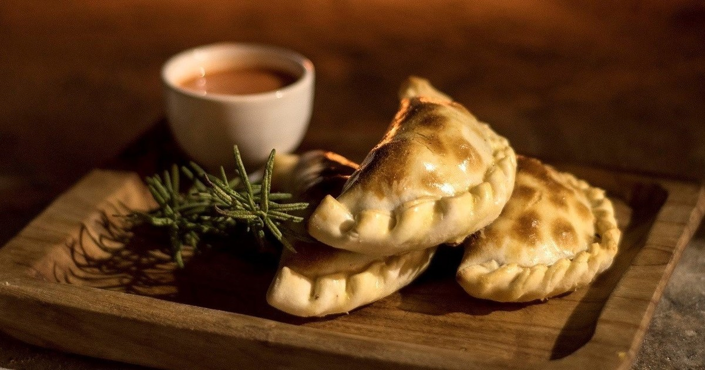
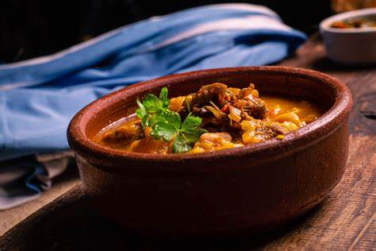

Asado

Empanadas

Choripan

Fugazzeta

Locro
Locro
Este plato, de importante valor cultural, se cocina a fuego lento y aporta gran cantidad de nutrientes al organismo gracias a la variedad de ingredientes. Según un artículo publicado por el gobierno argentino, el locro “contiene maíz, chorizo colorado, porotos y papa, entre otros (como zapallo o garbanzos).